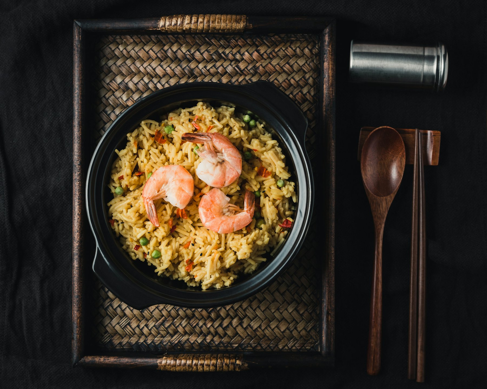
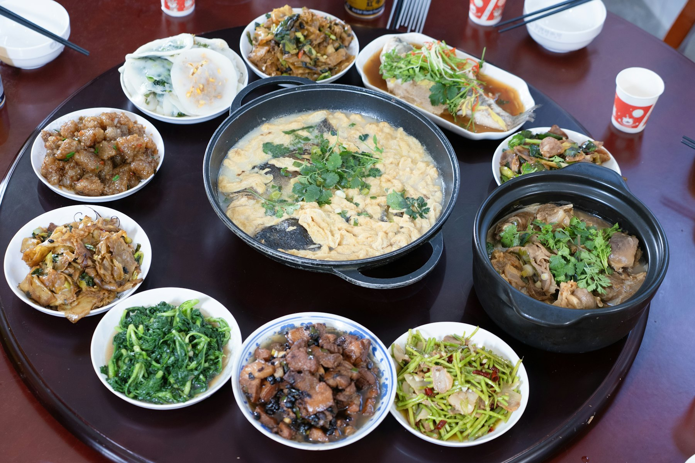

蓮宮酒樓
Chinees-Indisch specialiteitenrestaurant
Chinese, Indische en Kantonese gerechten, voor lunch en diner in Aalst-Waalre. Of bel even, dan staat je maaltijd klaar.
In ons restaurant zijn 73 zitplaatsen. Onze keuken staat garant voor de smakelijke bereiding van Chinese, Indische en Kantonese gerechten, en we streven ernaar dat elke gast tevreden naar huis gaat.
Al vanaf € 19 per persoon geniet je van onze specialiteiten van het huis, waarbij we de gerechten op jouw smaak afstemmen.


Bel je bestelling even door, dan staat je maaltijd klaar als je komt. Parkeren kan ruim voor de deur, bij de Jumbo in winkelcentrum Voldijn.
Bestel: 040 221 39 89Meld het ons, dan houden we er rekening mee. Allergeneninformatie
Wij verzorgen de catering al vanaf € 18,50 per persoon, voor gezelschappen vanaf 15 personen. Inclusief levering en materialen om het eten warm te houden.
Heb je een allergie? Meld het ons, dan houden we er rekening mee.
Per gerecht staat in onze allergenenlijst welke allergenen erin zitten, met het nummer van de kaart erbij. Zo zie je ook welke soort vlees in een gerecht of saus gaat.
Allergenenlijst per gerecht (pdf)Allergenenlijst 2022
Plus de soort vlees: varken, rund of kip.
Niet aanwezig: lupine en mosterd.
Sauzen · Overig / algemeen · Voor- en bijgerechten · Varkensvlees · Kip · Groente- en eiergerechten · Nasi · Bami · Miefang · Indisch · Ossenhaas · Combinaties · Garnalen en vis · Specialiteiten
Wij zijn elke dag geopend.
| Maandag | 16.00 – 21.00 |
|---|---|
| Dinsdag | 12.00 – 22.00 |
| Woensdag | 12.00 – 22.00 |
| Donderdag | 12.00 – 22.00 |
| Vrijdag | 12.00 – 22.00 |
| Zaterdag | 12.00 – 22.00 |
| Zondag | 12.00 – 22.00 |
| Feestdagen | 12.00 – 22.00 |
De keuken sluit om 21.00 uur.
Hortensialaan 10
5582 CL Aalst-Waalre
Lotus Garden ligt op een goed bereikbare plek in winkelcentrum Voldijn, bij de Jumbo. Voor de deur is voldoende parkeerruimte.
Coördinaten: 51° 24′ NB, 5° 28′ OL